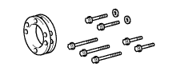

БЛОК ДВИГАТЕЛЯ (для моделей без DPF) > УСТАНОВКА > Подготовка

|  | 09213-58014 | Приспособление для блокировки шкива коленчатого вала |
| 09228-07501 | Ключ для масляного фильтра | |
 | 09330-00021 | Приспособление для блокировки соединительного фланца |
| Фирменный герметик Seal Packing Black от компании Тойота, Three bond 1207B или аналогичный | - |
| Фирменный герметик 1324 от компании Тойота, Three Bond 1324 или аналогичный | - |
| Индикатор часового типа для отверстий | - |
| Компрессометр | - |
| Устройство для проверки кривизны шатуна | - |
| Нутромер | - |
| Индикатор часового типа с магнитной подставкой | - |
| Жидкость с красителем | - |
| Стропы для подъема двигателя | - |
| Комплект плоских щупов | - |
| Инструмент для очистки канавок | - |
| Нож | - |
| Микрометр | - |
| Оправка поршневых колец | - |
| Съемник поршневых колец | - |
| Пластмассовый молоток | - |
| Сминаемый пластмассовый калибр Plastigage | - |
| Прецизионная поверочная линейка | - |
| Развертка | - |
| Инструмент для снятия уступа | - |
| Мягкая щетка | - |
| Устройство для проверки пружин | - |
| Небольшая отвертка | - |
| Съемник стопорных колец | - |
| Стальной стержень | - |
| Стальной угольник | - |
| Тахометр | - |
| Динамометрический ключ | - |
| Устройство для расточки седел клапанов | - |
| Штангенциркуль | - |
| V-образная призма | - |
| Проволочная щетка | - |
| Деревянный брусок | - |
| Деревянный пруток | - |
 | 09010-3C100 | Комплект торцевых шестигранных головок | - |
 | (09013-6C110) | Торцевой шестигранный ключ 6 мм | - |
| (09013-6C130) | Торцевой шестигранный ключ 10 мм | - |
 | 09012-1C120 | Удлиненная торцевая головка 12 мм | - |
 | 09013-7C400 | Набор ключей | - |
 | 09017-1C130 | Разрезная головка 17 мм | - |
 | 09091-1C100 | Инструмент для обрезки прокладки масляного поддона | - |
 | 09200-00010 | Набор калибров для регулировки двигателя | - |